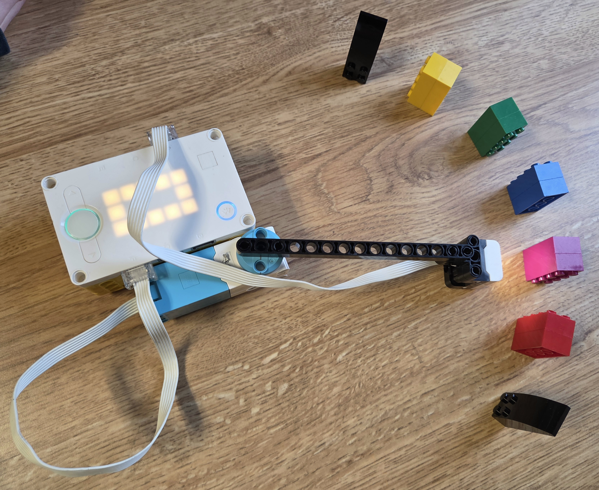
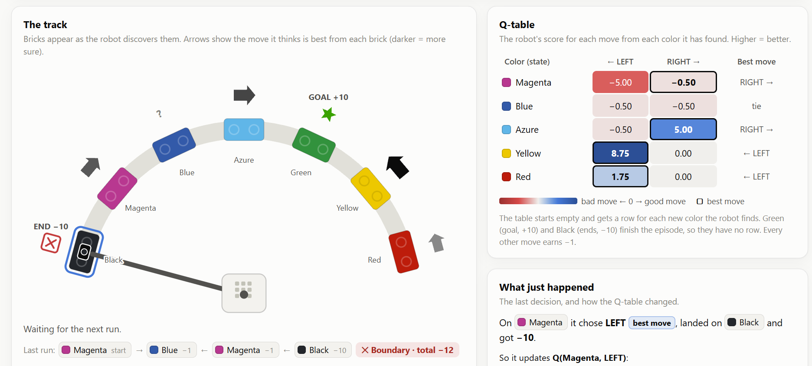

In this activity, we learned about reinforcement learning by trying to get our robots to find a green LEGO brick. Each action received a small negative reward, hitting a black boundary piece received a large negative reward and ended the game, and finding the green brick received a very large positive reward.
We used a web interface to visualize how the robot learned whether moving left or right by one color was the better action. After the learning stage, we deployed what the robot had learned and tried to find the green brick. We also experimented with changing the learning setup: rearranging the colors during training, adding or removing colors before deployment, and adding two of the same color.